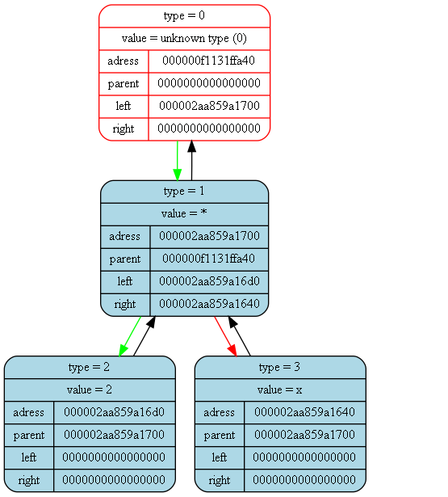
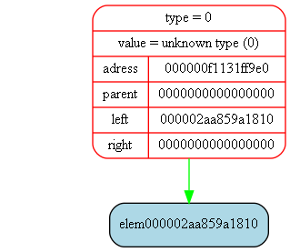

<pre>
<pre>

Tree dump from (int main()) at (main.cpp) at line (17):
tree [000000f1131ffaf0] "&func_tree" at (int main()) at (main.cpp)(12):
{
	status   = 1
	error    = 0
	size     = 3

	((x)^(2))
}
<pre>

Tree dump from (int GeneratePdf(Tree_t*, double)) at (dif.cpp) at line (88):
tree [000000f1131ffa10] "&der_tree" at (int GeneratePdf(Tree_t*, double)) at (dif.cpp)(85):
{
	status   = 1
	error    = 0
	size     = 3

	((2)*(x))
}
<pre>

Tree dump from (int TreeDtor(Tree_t*)) at (tree/tree.cpp) at line (42):
tree [000000f1131ff9b0] "&slope_tree" at (int GeneratePdf(Tree_t*, double)) at (dif.cpp)(101):
{
	status   = 1
	error    = 48
	size     = 0

	data is corrupted
}
